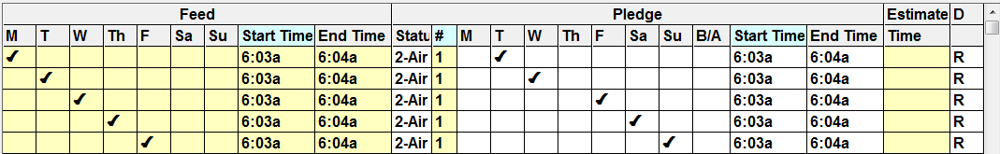

Record and Playback
The X-Digital record and playback feature allows you to time shift programming automatically; allowing agreements to be defined with delayed pledges that can be recorded and played back later and still have the correct regional copy that was set to air with the original spot.
X-Digital records the signal sent from the satellite prior to any regional copy being applied. Meaning the generic copy is what is recorded and stored. Because of this, the regional copy instructions must be sent on the day that they are to actually air, the day on which the recorded programming is to be played back.
Record and Playback Rules
- The Feed and Pledged break lengths must match one another.
- Air delayed pledges can be delayed by time, by date, or both date and time.
- A given feed break can have multi-playbacks.
- Live feed and aired delays allowed for the same break.
- Aired delay pledges can only be delayed to air on or after the feed date/time.
- Aired delay pledges can only be delayed up to a maximum of seven days.
- The days on which the aired delayed spots air will be in the same order in which they were fed, meaning that if spots were fed Monday, Tuesday, Wednesday, and were delayed one day, they will air in fed order on Tuesday, Wednesday, Thursday.
- Agreement delayed pledges defined in Counterpoint must coincide with the recorded playback days and time defined in X-Digital.
- When running the X-Digital export, each day that has delayed pledges must be exported.
- For example, if there is a Saturday only vehicle that one station has an agreement to air it delayed till Sunday, the X-Digital export must be run for both Saturday – for those stations airing it on Saturday – and Sunday, for that station airing it on Sunday.
- This can be done by running each day individually or multiple days at a time.
- In addition, if a fed avail that is fed in one week is pledged to air delayed to the next week, the log also must be generated for the second week before running the X-Digital export to export the spots that are delayed to the second week.
- Live pledges will always be transmitted to X-Digital, regardless of the agreement’s settings.
- If a pledge is left blank, it is treated as if it were Live and will be transmitted to X-Digital, but nothing will be transmitted during the recorded playback.
- Both ISCI and Break X-Digital avail methods are supported.
- The playback feature only pertains to the Spot Insertion export, no other X-Digital exports are affected.
Setup
There are two additional questions that must be activated in addition to the setup previously noted to make the record and playback feature work.
Affiliate Site Options
The record and playback feature must be activated in Affiliate Site Options.
Affiliate Agreements
Indicate in the Agreement Pledge screen which agreements will be using the record and playback feature.
Note, this question only appears if the “Support X-Digital Automatic Playback Feature” is checked on in Site Options.
Pledge Examples
Delayed pledges with a status of 2, 10, and/or 11 are supported with the record and playback X-Digital feature.
Example 1: Live Only
This agreement is set up to air the Monday spot live. The live feed sent spot to X-Digital will air on Monday.
Example #2: Delayed Only
This agreement is setup to delay the Monday spot and air the spot on Tuesday. The delayed spot sent to X-Digital will be day and time shifted to air one hour and one day after its live feed on Tuesday at 7:14a.
Example #3: Live and Delayed
This agreement has a mixture of live and delayed spots, with the first spot airing live and the second spot being delayed (day and time shifted) to Tuesday. The live spot will air on Monday as fed and the delayed spot will be day and time shifted to air one hour and one day after its live feed on Tuesday at 7:14a.
Example #4: Multiple Airplays
The record and Playback feature allows multiple airplay agreements; this is the only way in which X-Digital can handle multiple airplays. In this agreement, each spot is to air twice, with the first spot airing live. The second spot is time shifted to air 41 minutes after it is fed, at 6:46p.
Example #5: Gap in Delayed Days

This agreement shows day shifting with a gap in the delayed days. The spots that are fed on Monday and Tuesday are delayed, and will air on Tuesday and Wednesday. The agreement skips Thursday all together, so the spots fed on Wednesday will air on Friday, Thursday’s spots will air on Saturday, and so on.